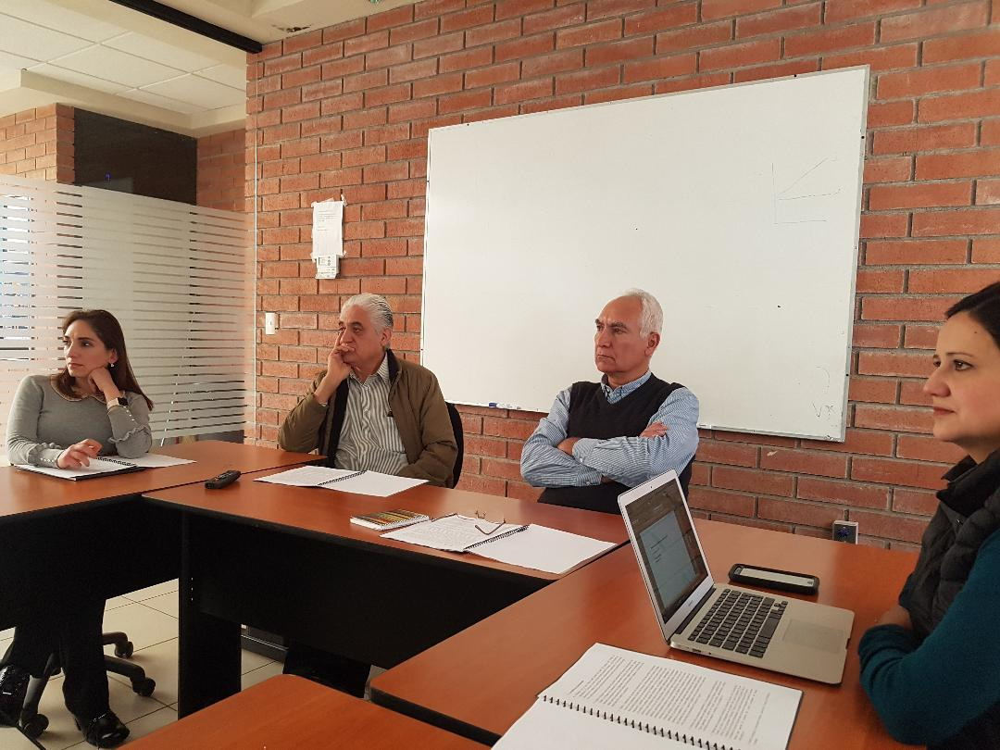
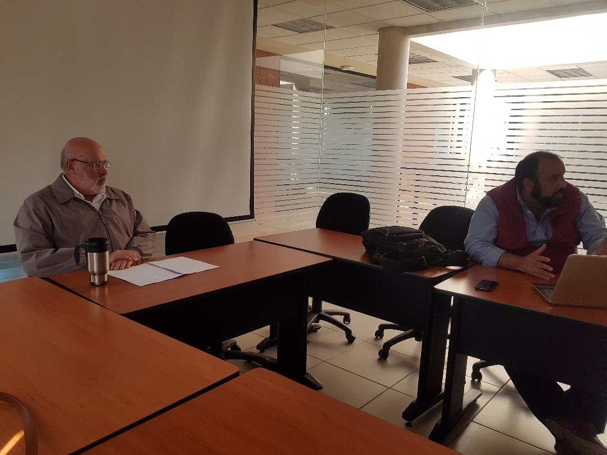
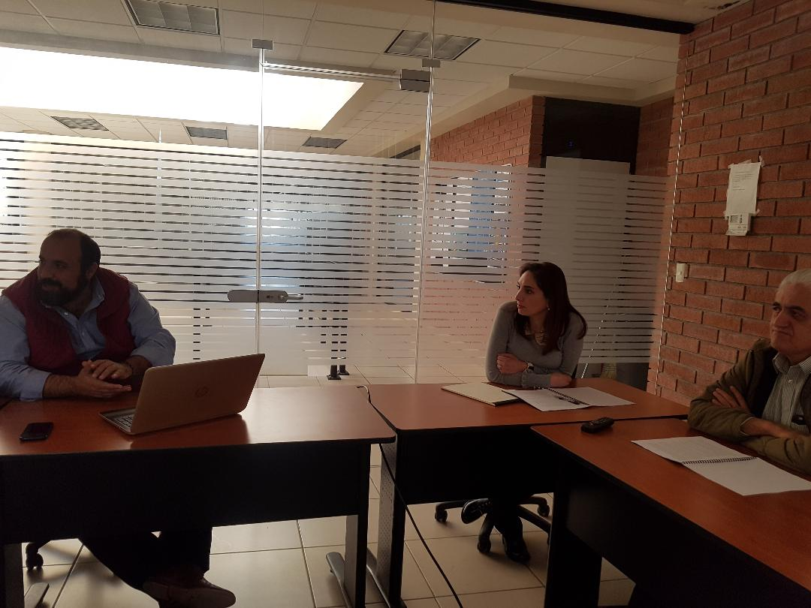

CPC se reúne con académicos del Centro de Investigaciones Socieconómicas (CISE) en la Unidad Camporredondo donde participaron investigadores y académicos de la UAdeC
Sistema Anticorrupción del Estado de Coahuila. Consejo de Participación Ciudadana.
Saltillo, Coahuila.- Integrantes del Consejo de Participación Ciudadana (CPC) se reunió el jueves 1 de febrero de 2018 con académicos del Centro de Investigaciones Socieconómicas (CISE) de la Universidad Autónoma de Coahuila (UAdeC) en el campus Saltillo.
Durante la sesión de información estuvieron, el presidente del CPC, Manuel Gil Navarro y las consejeras Ana Yuri Solís Gaona y Lourdes de Koster López, quienes dialogaron sobre los alcances y la propuesta del Plan de Trabajo del Sistema Anticorrupción de Coahuila.
En la Sala de Juntas del CISE, en la Unidad Camporredondo, participaron los investigadores y académicos de la UAdeC, Gilberto Aboites Manrique, director del CISE; Francisco Martínez Gómez, maestro investigador de esta misma institución y la académica e investigadora Miriam Valdés Ibarra, así como el ex rector e investigador de la Autónoma de Coahuila, Alejandro Dávila Flores.
Durante la presentación del Plan de Trabajo y la visualización de los temas que son prioritarios para el Sistema Anticorrupción de Coahuila, los integrantes del CPC hablaron de la relevancia de dar a conocer el esquema bajo el que busca generar una cultura de prevención, denuncia y sanción de las prácticas de corrupción en la sociedad.
En este tenor el doctor Alejandro Dávila Flores recalcó la necesidad de mantener reuniones periódicas con diferentes cuerpos académicos en las regiones de Coahuila, para conocer las problemáticas que enfrenta la comunidad y que están relacionadas con actos deshonestos cometidos desde los ámbitos de gobierno o de la sociedad.
El doctor Gilberto Aboites fue enfático al ofrecer total apertura y apoyo en las labores del Sistema Estatal Anticorrupción de Coahuila y reconoció además, la relevancia de las acciones que en la entidad logren impulsarse en estos temas.


